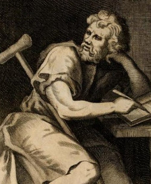
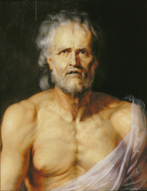

O Estoicismo ou Escola Estoica é uma doutrina filosófica fundamentada nas leis da natureza, que surgiu na Grécia no século IV a.C. (por volta do ano 300), durante o período denominado helenístico (III e II a.C.). Foi fundada pelo filósofo grego Zênon de Cítio (333 a.C.- 263 a.C.), e vigorou durante séculos (até III d. C.) tanto na Grécia, quanto em Roma.
O termo “Estoicismo” surge da palavra grega “stoá”, que significa pórtico, locais de ensinamentos filosóficos.
Para os estoicos, a perfeição humana estava fundamentada na ideia de que os seres humanos estão ligados à natureza. Assim, devem negar seus desejos para a realização de uma vontade guiada pela razão em conformidade com essa natureza. Ou seja, uma corrente filosófica donde a "virtude" depende da vontade subordinada à razão, sendo considerada a base para se atingir a felicidade. Além disso, a escola estoica influenciou o desenvolvimento do Cristianismo a partir do conceito de providência. Para ambos, há uma razão universal divina que regula tudo o que existe.
A aceitação dessa providência, para os estoicos, fica a cargo da vontade orientada pela razão e a união do indivíduo com a natureza. Já para a doutrina cristã, dependia a abdicação do pecado e de uma vida devotada à fé e a ligação do indivíduo com Deus.
Os principais representantes do estoicismo foram:
Filósofo grego nascido na cidade de Hierapólis, atual Turquia. Viveu grande parte de sua vida como um escravo romano e de sua obra destacam-se: “Manual de Epicteto” e “Discursos”, editadas por seu discípulo Arriano de Nicomedia (86-175).
Um dos objetivos principais de sua filosofia é a busca da felicidade.
- Para ser feliz o homem deve procurar mudar apenas o que pode ser mudado. As coisas que não podem ser mudadas devem ser aceitas como elas são. Assim, devemos aceitar a realidade.
- Devemos fazer a diferenciação do que é útil (para ser seguido) e inútil (para ser descartado).
- Valorização da razão e do conhecimento.
- O homem precisa conhecer as representações sociais (um dos principais objetivos da filosofia) para ter condições de fazer boas escolhas na vida.
- Visão do universo harmônico, organizado e racional. Cada elemento do cosmos, inclusive o ser humano, tem uma função. O ser humano é feliz quando cumpre sua função em harmonia com o funcionamento do universo.
- Para Epicteto, o desejo é uma das principais causas da infelicidade humana.
- “O desejo e a felicidade não podem viver juntos”.
- “A felicidade só pode ser encontrada no interior”.
- “Os homens não são perturbados por coisas, mas pela visão que possuem destas coisas”.
- “Não tenha medo da pobreza, do exílio, da prisão ou da morte. Devemos ter medo é do próprio medo”.
- “Para alcançar a liberdade só existe uma maneira: desprezar tudo que não depende de nós”.
- "O homem sábio é aquele que não se entristece com as coisas que não têm, mas alegra-se com as que têm".
Filósofo, orador, poeta e político, Lúcio Aneu Sêneca nasceu na cidade de Córdoba, atual Espanha, sendo considerado um dos mais importantes intelectuais do Império Romano. Sêneca focou nos conceitos sobre ética, física e lógica para o desenvolvimento da Escola Estoica. De sua obra destacam-se os Diálogos, Cartas e Tragédias. Sêneca teve Nero, o imperador romano, como seu pupilo e foi o principal concelheiro do Império Romano.
Sêneca se ocupou de refletir e escrever sobre a alma, a existência humana, ética, lógica e natureza, do qual desenvolveu uma abordagem filosófica diferente daquela que vigorava no pensamento filosófico de Roma.
Dessa forma, ele destacava a importância da fraternidade e do amor entre os homens como forma de amenizar as dores da existência, dada importância de ser resiliente em determinadas situações da vida. Sobre isso, escreve nas “Cartas a Lucílio”, um dos governadores da Sicília, Itália o texto intitulado “O Homem Perfeito”:
“(...) O homem perfeito, possuidor da virtude, nunca se queixa da fortuna, nunca aceita os acontecimentos de mau humor, pelo contrário, convicto de ser um cidadão do universo, um soldado pronto a tudo, aceita as dificuldades como uma missão que lhes é confiada. Não se revolta ante as desgraças como se elas fossem um mal originado pelo azar, mas como uma tarefa de que ele é encarregado. «Suceda o que suceder», — diz ele — «o caso é comigo; por muito áspera e dura que seja a situação, tenho de dar o meu melhor!» Um homem que nunca se queixa dos seus males nem se lamenta do destino, temos forçosamente de julgá-lo um grande homem”.
- “Não é porque certas coisas são difíceis que nós não ousamos; é justamente porque não ousamos que tais coisas são difíceis.”
- “Quando a velhice chegar, aceita-a, ama-a. Ela é abundante em prazeres se souberes amá-la. Os anos que vão gradualmente declinando estão entre os mais doces da vida de um homem, Mesmo quando tenhas alcançado o limite extremo dos aos, estes ainda reservam prazeres.”
- “As coisas que nos assustam são em maior número do que as que efetivamente fazem mal, e afligimo-nos mais pelas aparências do que pelos fatos reais.”
- “Deus dotou o homem de uma boca e dois ouvidos para que ouça o dobro do que fala.”
- “É melhor ser desprezado por viver com simplicidade do que ser torturado por viver em permanente simulação.”